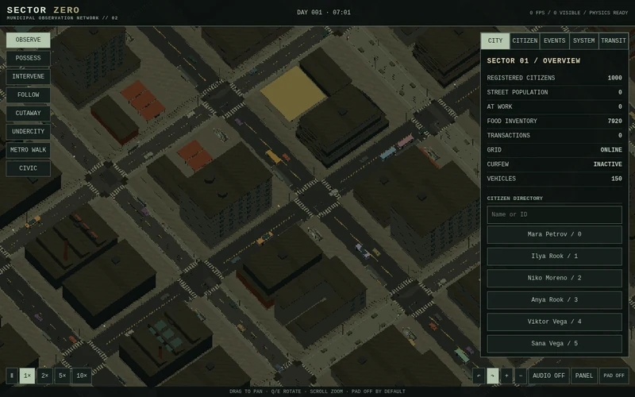
Game library.
Games, simulations and interactive experiments. Open a project to play its current browser build.
Collection
06 PROJECTS
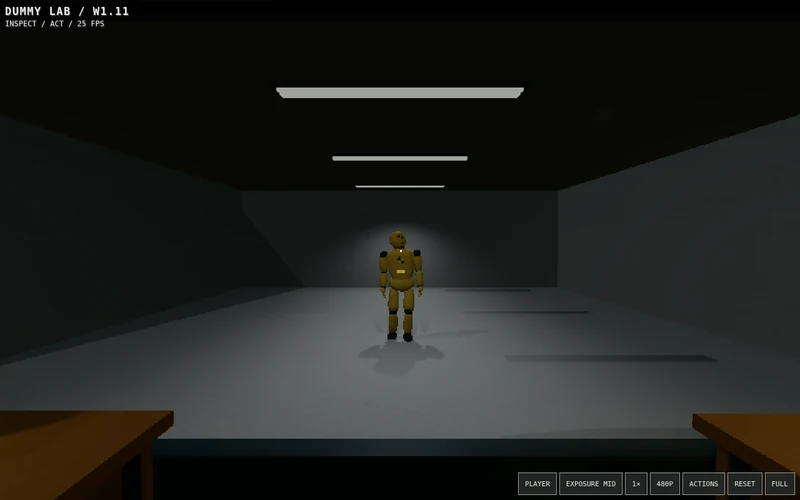
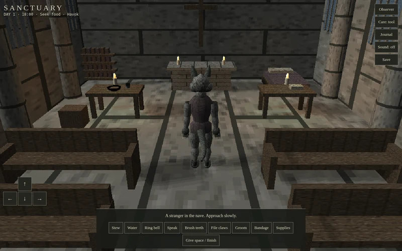
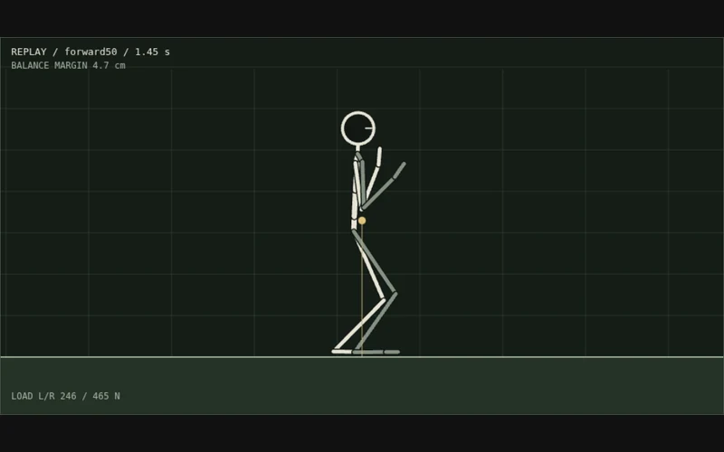
Dojo X
Experiment with articulated fighters, physical movement and recorded motion.
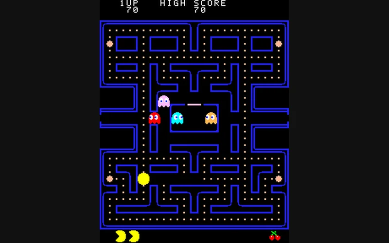
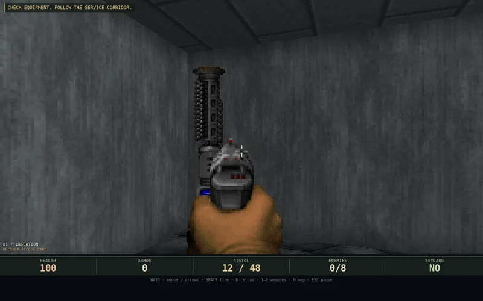
Night Watch
Infiltrate Relay Station. Sweep the security compound, recover the access card and reach the service exit.
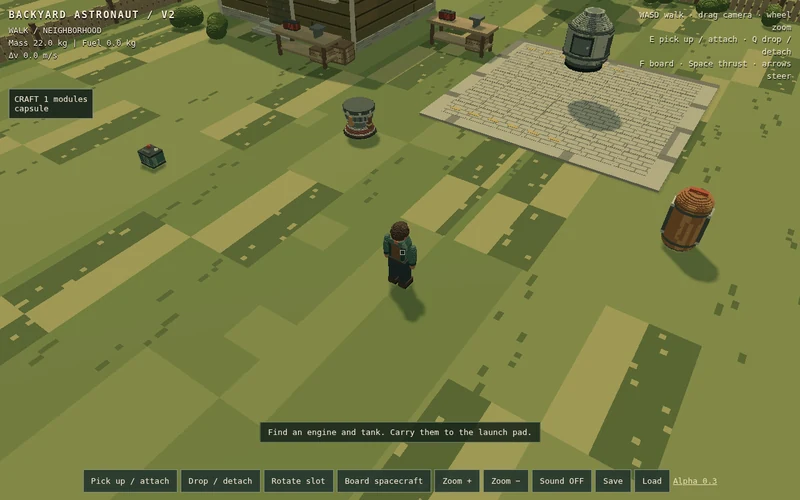
Backyard Astronaut
Scavenge, assemble and fly the same spacecraft in one 3D world. Experimental unified engine.
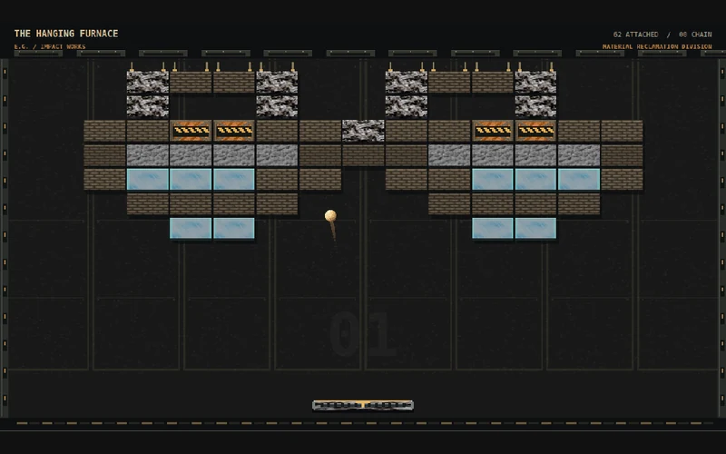
Brick Breaker
Impact Works — precision demolition through suspended industrial structures, material reactions and upgrade builds.
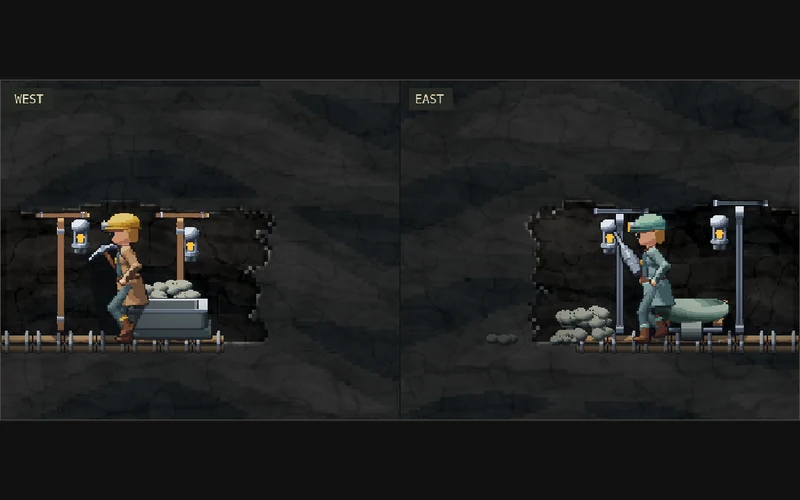
The Meeting Seam
Observe two autonomous miners excavating opposing tunnels, building supports and hauling ore. Help or interfere.
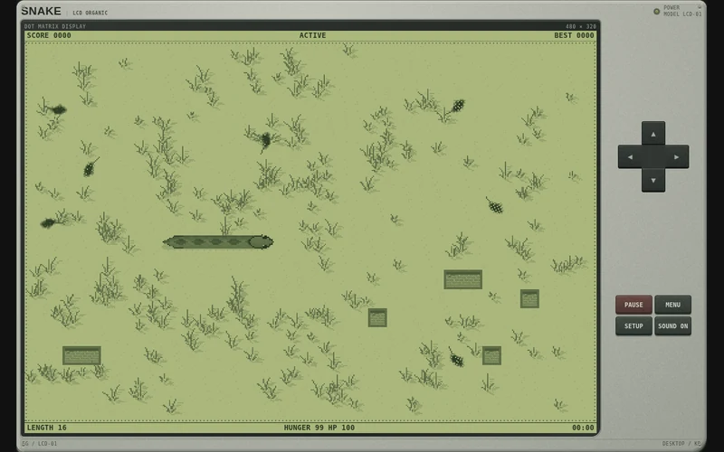
SNAKE — LCD Organic
Classic grid Snake and continuous organic hunting in a simulated monochrome LCD display.
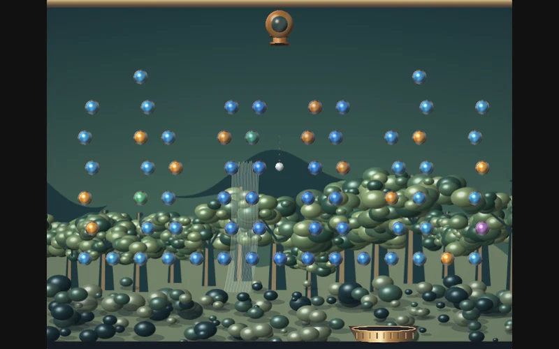
ANGLEREUCLIDI INTERACTIVE
Lunar Angler
Cast a tethered hook across a miniature gravitational system and retrieve aquatic specimens.
No projects match your search.